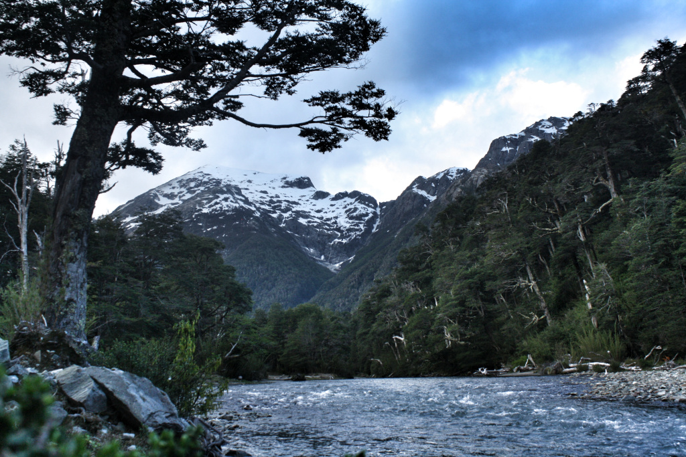
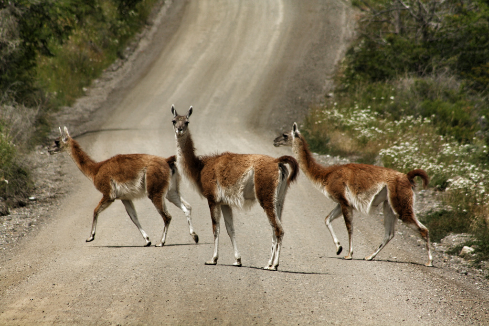

América do Sul
Pedalando 16.000km em 11 meses pelo Brasil, Argentina, Paraguai, Uruguai e Chile
Comecei o caminho em Pindamonhangaba-SP no dia 30 de abril de 2016 e terminei na cidade de Curitiba em março do ano seguinte.
A rota foi planejada dado os seguites lugares chave: Serra Catarinense e Gaúcha, ruínas Jesuítas, Buenos Aires, Mendoza, Santiago, Pucon, Bariloche, Carretera Austral, Glaciar Perito Moreno, Ushuaia. A partir daí tracei quais estradas eu iria passar pensando em outros lugares bonitos e estradas mais tranquilas. Esse é o tipo de viagem que não há um destino: a vivência do dia-a-dia era o que eu procurava.
Meu amigo Kolb pedalou comigo por 8 dias e depois segui sozinho.
Levei minha bagagem em alforges ou em suportes da bicicleta somando 25 quilos. Empacotei os seguintes itens:
- Mudas de roupas e agasalhos para o frio seguindo o conceito de camadas (segunda pele, fleece, corta-vento e capa de chuva)
- Kit de cozinha com uma panela, espiriteira a alcool, talheres.
- Ferramentas para conserto da bicicleta.
- Kit para acampamento com barraca, saco de dormir, isolante térmico inflável
- Eletrônicos como celular, câmera fotográfica, tablet e carregadores
- Comida conforme a necessidade e água.
A viagem trancorreu sem maiores problemas: nenhuma questão de saúde; os problemas mecânicos com a bicicleta foram resolvidos de forma rápida (ou não tão rápida assim mas resolvidos) e apenas dia com problema de clima.
Porém sendo uma viagem de longo tempo, eu preocupava apenas com o presente, contemplando paisagens e conhecendo outras pessoas. Não tinha a data final ou a preocupação de ter que terminar em tal dia. Isso foi uma boa experiência que nunca tive.
Bairro do Gomeral, Guaratingueta, São Paulo
Morro da Igreja, Urubici, Santa Catarina

Praia em Laguna, Santa Catarina
Subindo a serra do Rio do Rastro, Santa Catarina
Acampamento nos Aparados da Serra, Rio Grande do Sul
Canion Monte Negro, Rio Grande do Sul
Canion Fortaleza em Cambará do Sul, Rio Grande do Sul

Canion Fortaleza em Cambará do Sul, Rio Grande do Sul
Catedral de Santo Angelo, Rio Grande do Sul
Ruinas Jesuitas em São Miguel das Missões, Rio Grande do Sul

Rio Uruguiai em San Javier, Uruguai

El caminito, Buenos Aires
Casa Rosada em Buenos Aires, Argentina
Trecho árido em Tanti, Argentina
Oratório à Difunta Correa, Vallecito, Argentina

Termas Cacheuta em Mendoza, Argentina
Travessia da cordilheira na Argentina - Paso Libertadores, Argentina
Cordilheira dos Andes em Mendoza, Argentina
Travessia da Cordilheira, Uspallata, Argentina
Puente del Inca, Argentina
Los Caracoles, Chile
Los Caracoles, Chile
Vista da cidade de ValParaiso, Chile
Vista de Santiago a partir do morro Santa Lucia, Chile

Vulcão Villarica em Pucon, Chile

Estrada próximo a Puerto Varas, Chile
Palafitos de Castro, Ilha de Chiloe, Chile
Iglesia de Tenaún, Ilha de Chiloe, Chile
Vulcão Osorno, Chile

Lago Llanquihue e vulcão Osorno em Puerto Octay, Chile
Parque Nacional Puyehue, Chile

Acampamento no parque Nahuel Huapi, Argentina
Acampamento no parque Nahuel Huapi, Argentina
Acampamento no parque Nahuel Huapi, Argentina
Caminho dos 7 lagos, Argentina
Caminho dos 7 lagos, Argentina

Vista do lago Nahuel Huapi em Bariloche, Argentina
Camping Bahia Steffen, Bariloche, Argentina
"O dia terminava na serenidade de um esplendor calmo e formidável. A água brilhava pacificamente; o céu sem um pontilho, era uma benigna imensidão de luz imaculada[...]" Coração das Trevas
Vista do Steffen próximo a Bariloche, Argentina
Ruta 40 entre Bariloche e El Bolson, Argentina
Carretera Austral em Chaiten, Chile
Vertisquero Colgante, Chile

Vertisquero Colgante, Chile
Carretera Austral, Chile
Carretera Austral, Chile
Carretera Austral, Chile
Cerejas no pé. Coihaique, Chile
Carretera Austral, Chile

Carretera Austral em Villa Cerro Castillo, Chile

Puerto Rio Tranquilo, trecho da Carretera Austral, Chile

Puerto Rio Tranquilo, trecho da Carretera Austral, Chile
Rio Backer, trecho da Carretera Austral, Chile

Guanacos. Cochrane na Carretera Austral, Chile
Rio Backer, trecho da Carretera Austral, Chile
Ovelhas, trecho da Carretera Austral, Chile
Passarelas da cidade de Caleta Tortel que fica entre montanhas íngremes e o mar, Chile

Trilha para chegada em El Chalten a partir de O'Higgins, Chile

Casa del Ciclista em El Chalten, Argentina
Camping ao lado da Ruta 40 entre El Chalten e El Calafate, Argentina

Ruta 40 entre El Chalten e El Cafalate, Argentina
Glaciar Perito Moreno em El Calafate, Argentina

Glaciar Perito Moreno em El Calafate, Argentina
Glaciar Perito Moreno em El Calafate, Argentina
Abrigo para viajantes entre Puerto Natales e Punta Arenas, Chile
Estrada acompanhando a Bahia Inútil na Terra do Fogo
Evald da Alemanha e Juan do Brasil dividindo a abrigo na Terra do Fogo

Pinguins-Rei na Bahia Inútil, Chile

Raposa na estrada para Tolhuim, Argentina
Laguna Esmeralda, Ushuaia, Argentina
Palacio Salvo na Praça da Independência, Montevideo, Uruguai

Camping El Eden em Piriapolis, Uruguai
Casapueblo em Punta Balena, Uruguai

Punta del Este, Uruguai
Tunel de árvores, Capivari do Sul, RS
Vista de Torres, RS
Trilha do Rio do Boi, Praia Grande - SC
Trilha do Rio do Boi, Praia Grande - SC
São Francisco do Sul - SC
Morretes - PR